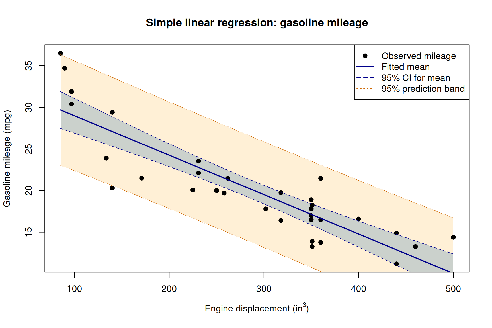

The answers below follow the question numbering in hw-2.qmd. Numerical results use the 32-car Table B.3 data and the simple linear regression of mileage (y) on engine displacement (x1). The printed values are rounded; R retains full precision for calculations.
1. Fit and interpret the model
summary(fit)
Call:
lm(formula = y ~ x1, data = mpg_data)
Residuals:
Min 1Q Median 3Q Max
-6.7923 -1.9752 0.0044 1.7677 6.8171
Coefficients:
Estimate Std. Error t value Pr(>|t|)
(Intercept) 33.722677 1.443903 23.36 < 2e-16 ***
x1 -0.047360 0.004695 -10.09 3.74e-11 ***
---
Signif. codes: 0 '***' 0.001 '**' 0.01 '*' 0.05 '.' 0.1 ' ' 1
Residual standard error: 3.065 on 30 degrees of freedom
Multiple R-squared: 0.7723, Adjusted R-squared: 0.7647
F-statistic: 101.7 on 1 and 30 DF, p-value: 3.743e-11
The estimated slope means that an increase of one cubic inch in engine displacement is associated with a decrease of about 0.0474 miles per gallon in predicted mileage, on average within the range of these data. The intercept predicts 33.72 mpg at zero displacement. A zero-displacement engine is outside the observed range and not practically meaningful, so the intercept should not be interpreted as the fuel economy of an actual automobile.
2. Confidence intervals for \(\beta_0\), \(\beta_1\), and \(\sigma^2\)
For \(j=0,1\), a two-sided 95% confidence interval is
n df SSE MSE
32.000000 30.000000 281.824378 9.394146
sigma2_ci
lower upper
5.998913 16.784480
The variance interval is approximately \((5.9989,\ 16.7845)\) mpg\(^2\). This is an interval for the error variance, not for the standard deviation \(\sigma\).
3. Test the slope
\[
H_0:\beta_1=0,\qquad H_1:\beta_1\ne0.
\]
Under \(H_0\), the statistic \(t=b_1/\operatorname{SE}(b_1)\) has a \(t_{n-2}\) distribution. Reject \(H_0\) when \(|t|>t_{0.975,30}\) or equivalently when \(p<0.05\).
critical_value t_statistic.t value p_value.Pr(>|t|)
2.042272e+00 -1.008641e+01 3.743041e-11
Here \(t\approx-10.0864\) on 30 degrees of freedom, with \(p\approx 3.743\times10^{-11}\). Reject \(H_0\): displacement has a statistically significant linear association with gasoline mileage. The estimated association is negative.
4. ANOVA and significance of regression
anova(fit)
Analysis of Variance Table
Response: y
Df Sum Sq Mean Sq F value Pr(>F)
x1 1 955.72 955.72 101.74 3.743e-11 ***
Residuals 30 281.82 9.39
---
Signif. codes: 0 '***' 0.001 '**' 0.01 '*' 0.05 '.' 0.1 ' ' 1
The ANOVA quantities are \(SSR\approx955.7197\), \(SSE\approx281.8244\), and \(SST\approx1237.5441\). The corresponding table is
Source
df
SS
MS
\(F\)
Regression
1
955.7197
955.7197
101.7357
Residual
30
281.8244
9.3941
Total
31
1237.5441
For significance of regression, test \(H_0:\beta_1=0\) against \(H_1:\beta_1\ne0\). The statistic is
In simple linear regression with an intercept, \(F=t^2\) for the slope, so the ANOVA \(F\)-test and the two-sided slope \(t\)-test give identical \(p\)-values and decisions.
\(R^2\approx0.7723\), so approximately 77.23% of the observed variation in gasoline mileage is accounted for by its fitted linear relationship with engine displacement. This does not establish that displacement causes the variation.
6. Confidence interval for the mean mileage at 275 in\(^3\)
ci_mean
fit lwr upr
1 20.69879 19.58807 21.80952
The fitted mean mileage is 20.6988 mpg. Its 95% confidence interval is approximately \((19.5881,\ 21.8095)\) mpg. This interval estimates the average mileage for the population of automobiles with a 275 in\(^3\) engine under the fitted model.
For reference, the standard error of the estimated mean at \(x_0=275\) is
7. Prediction for a new automobile at 275 in\(^3\)
(a) The point prediction is \(\hat y(275)=\mathbf{20.6988}\) mpg.
(b) The 95% prediction interval is approximately \((14.3415,\ 27.0561)\) mpg.
pi_car
fit lwr upr
1 20.69879 14.34147 27.05611
(c) The prediction interval is wider than the confidence interval in Question 6 because it must account for both uncertainty in the fitted mean and the variability of an individual automobile around that mean. Specifically,
The additional \(1\) under the second square root represents the variation of a new response around its conditional mean.
8. Plot observations, fitted line, confidence band, and prediction band
xgrid <-data.frame(x1 =seq(min(x), max(x), length.out =300))ci_grid <-as.data.frame(predict(fit, newdata = xgrid,interval ="confidence", level = .95))pi_grid <-as.data.frame(predict(fit, newdata = xgrid,interval ="prediction", level = .95))plot(x, y, pch =19, col ="black",xlab =expression("Engine displacement (in"^3*")"),ylab ="Gasoline mileage (mpg)",main ="Simple linear regression: gasoline mileage")polygon(c(xgrid$x1, rev(xgrid$x1)),c(pi_grid$lwr, rev(pi_grid$upr)),col =adjustcolor("orange", alpha.f =0.16), border =NA)polygon(c(xgrid$x1, rev(xgrid$x1)),c(ci_grid$lwr, rev(ci_grid$upr)),col =adjustcolor("steelblue", alpha.f =0.28), border =NA)points(x, y, pch =19, col ="black")lines(xgrid$x1, ci_grid$fit, col ="blue4", lwd =2)lines(xgrid$x1, ci_grid$lwr, col ="blue4", lty =2)lines(xgrid$x1, ci_grid$upr, col ="blue4", lty =2)lines(xgrid$x1, pi_grid$lwr, col ="darkorange3", lty =3)lines(xgrid$x1, pi_grid$upr, col ="darkorange3", lty =3)legend("topright",legend =c("Observed mileage", "Fitted mean", "95% CI for mean","95% prediction band"),col =c("black", "blue4", "blue4", "darkorange3"),pch =c(19, NA, NA, NA),lty =c(NA, 1, 2, 3), lwd =c(NA, 2, 1.5, 1.5),bg ="white")

Mileage versus displacement, with 95% confidence and prediction bands.
The outer prediction band covers the uncertainty in a new individual response and is therefore wider than the inner confidence band for the conditional mean.
9. Numerical verification of least-squares identities
The sums below are approximately zero up to floating-point rounding; in exact arithmetic the corresponding least-squares identities hold exactly for a model with an intercept.
(a) Residuals sum to zero.
sum(e)
[1] -2.803313e-15
The intercept normal equation is \(\sum_i(y_i-\hat y_i)=\sum_i e_i=0\).
(b) Observed and fitted responses have the same sum.
Thus the least-squares intercept estimator is unbiased. Normality is not required for this expectation calculation; fixed predictors, the correct conditional mean model, and zero-mean errors suffice.
11. ANOVA decomposition
Write \(e_i=y_i-\hat y_i\). Since \(y_i-\bar y=(\hat y_i-\bar y)+e_i\),